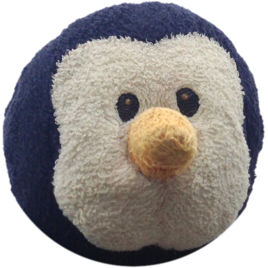

PENGUINOH WADDLESOfficial travel document
of a stuffed penguin
The not-so-flightless bird.
A small plush penguin with a big passport. Every photo taken on location.

PENGUINOH WADDLESOfficial travel document
of a stuffed penguin
A small plush penguin with a big passport. Every photo taken on location.
P<ANTWADDLES<<PENGUINOH<<<<<<<<<
PW0000001<9ANT<FLUFFY<<<<<<<<04